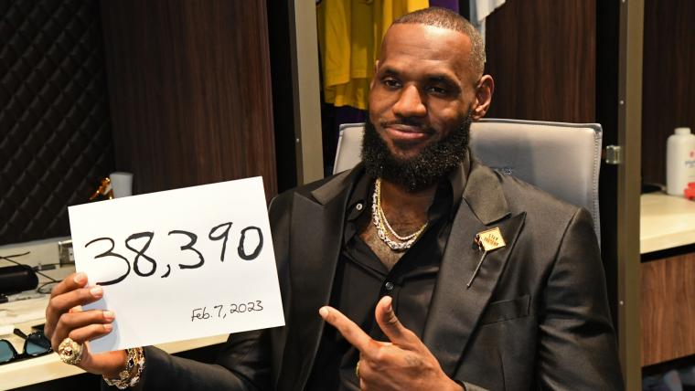

"The Record Book"
Patrick GallagherWilt Chamberlain's is a basketball icon, his sheer dominance and the numerous records he shattered make him omnipresent in the basketball record books. Known as "The Stilt," or "The Record Book," Chamberlain completely revolutionized the sport as a whole. Wilt stood at an astounding 7 feet 1 inch tall, and was almost "too athletic" for the size he was. The way he would move around the court was completely unheard of for someone his size. His most famous achievment, and the one that is least likely to be broken, is his one hundred point game on March 2, 1962. There are no video broadcasts of this game, which have caused many to just simply deny that he scored that many points. On top of those hundred points, Wilt stacked on 55 rebounds. An unfair number. Another record he holds is the highest points per game average for a single season at 50.4 points. For context, very few players in today's game average more than 25, and ecen fewer get to 30. Wilt had over 30 points per game for seven consecutive seasons. Additionally, Chamberlain posted 118 50-point games and 32 60-point games, both of which are NBA records. He also somehow managed to lead the league in assists in the 1967-68 season.

LeBron James
"The King"
Patrick GallagherLeBron James is arguably the greatest player to ever hold a basketball in his hands. As the all time leading points scorer, he has scored a total of 40,017, passing the great Michael Jordan. A freak of nature, James has played every single position on the court throughout his allustrious career, from point guard to center. Further showing his all-around dominance, he is the first player to reach the milestone of 30,000 points, 10,000 rebounds, and 10,000 assists. On top of all of those records, he has four NBA championships, four finals MVP's, and four regular season MVP's. In a record that is unlikely to be broken, James has scored 40+ points against every single NBA team in the league. A testament to his longevity, James has been selected to an all time leading twenty all star games. Lebron is also a playoff KILLER. He holds the record for the most postseason wins of all time. This is in part possible by him having played the most games in postseason history. No matter what team he is on, or how bad his supporting cast is, he wills them into a deep playoff run. No wonder that his nickname since a young age has been "The Chosen One."

| Player | Points | Playoff Points |
|---|---|---|
| LeBron James | 40,017 | 5,988 |
| Michael Jordan | 32,292 | 5,987 |